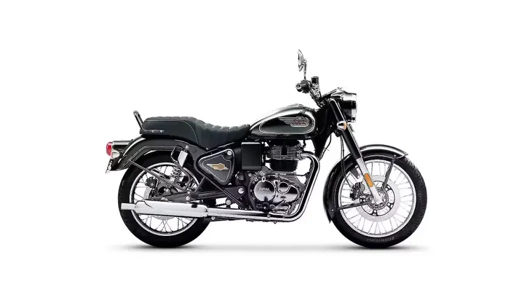
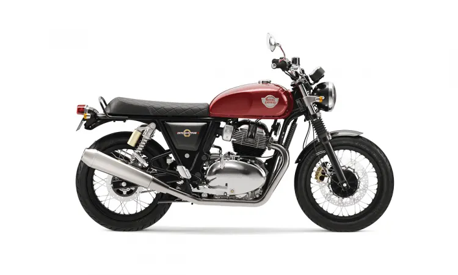
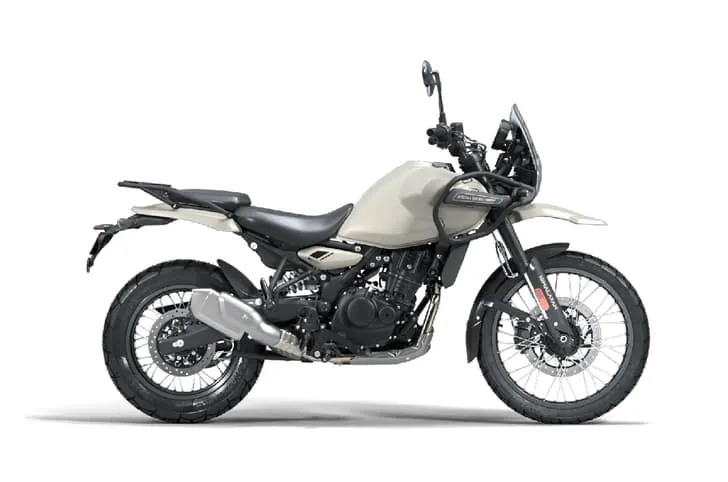

Royal Enfield is one of the world’s oldest motorcycle manufacturers in continuous production, with origins tracing back to 1901 in Redditch, England. Originally known as the Enfield Cycle Company, it earned its name from supplying precision parts to the Royal Small Arms Factory, a heritage reflected in its iconic cannon logo and the slogan "Made Like A Gun." Key models include the Classic 350, Bullet 350, Himalayan, and the 650cc parallel-twin series (Interceptor, Continental GT, Super Meteor). The brand distinguishes itself by blending vintage aesthetics with modern reliability, appealing to riders seeking both daily utility and adventurous touring capabilities.



email:royalenf@gmail.com
phone:98973-48502
website: Click link for more details